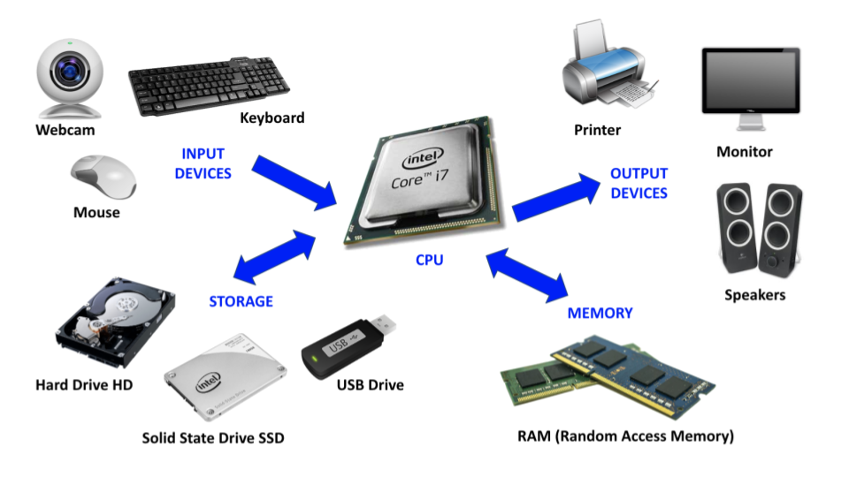

Lesson 1: Computers as Layered Systems
Big question
How can the same kind of machine be a camera, a map, a jukebox, a word processor, and a game console?
When you're done with this lesson, you should be able to name the four jobs every computer performs, tell the major kinds of hardware and software apart, trace an everyday action down through the layers of a computing system, and point out how a design choice hands out access, privacy, and control.
A computer is not just a laptop
Say the word computer and most people picture a laptop or a desktop tower. The kind of thing you use in an office for work or with RGB lighting for gaming. Computer scientists use the word much more broadly. Your phone is a computer. So is a game console, a car's navigation system, a smart thermostat, and the little control board inside a microwave. They look nothing alike and have wildly different purposes, but each one is a system that follows instructions to transform information.
Every computer does some combination of four basic jobs:
- Input: taking information in from the outside world. A touchscreen takes in the location of your finger; a microphone takes in changing air pressure; a network connection takes in messages from other computers.
- Processing: following instructions that transform information. A photo app brightens pixels, a calculator adds numbers, a game decides whether two objects just collided.
- Storage: holding onto information for later. Some storage only lasts while a program is running; some keeps your files around even after the power's off.
- Output: sending information back out. A screen lights up pixels, a speaker pushes air to make sound, a network connection sends a message on its way.
These four are kinds of work and every computing device will combine them in various ways. A touchscreen is both an input device and an output device. A network connection is input when it's receiving a webpage and output when it's sending your half-finished form. Even storage becomes input the moment a program reads a saved file back in.
Information is the common material
All computing devices act on information, but what do we mean by information? For our purposes, information is anything that lets you distinguish one possibility from another. Did the button get pressed or not? Is the light red, green, or blue? Which letter did someone just type? A single choice between two possibilities is the smallest unit of digital information there is: one bit.
A strange and useful fact about information is that it's independent of the physical form it takes. The same sentence can be spoken as sound waves, printed in ink, tapped out in Morse code, held as electrical states in a chip, or sent down a fiber-optic cable as pulses of light. The medium may change but the pattern, the information, stays the same.
Which is why one general-purpose machine can replace a whole shelf of specialized objects. Once maps, songs, photographs, messages, and calculations are all represented as digital information, the same hardware can store and process every one of them. Different software gives those bits different meanings and thus gives the machine different behavior. It's kind of amazing that one box of circuitry can be a jukebox, a darkroom, and a post office depending on nothing but the instructions you hand it, right?
The physical layer: hardware
Hardware means the physical parts of a computing system—the parts you could, at least in principle, touch (or drop on your foot).

- The central processing unit (CPU) is the part that carries out program instructions: it does arithmetic, compares values, and coordinates the other components. It's very fast, but it needs somewhere else to keep the instructions and data it's working with.
- Random-access memory (RAM) is the computer's temporary workspace, like a big scratchpad where everything that's currently being worked on is stored. RAM is fast but fundamentally unstable: if you lose power the whole scratchpad is thrown away.
- Long-term storage, like a solid-state drive, is the filing cabinet: slower to reach than RAM, but it hangs onto your programs and files when the machine is off.
- Input and output devices connect the computer to people and the physical world. Keyboards, sensors, screens, speakers, and network adapters all translate between physical events and digital information. Some computers, like Arduino boards you might have seen in a school or library makerspace, have specialized "pins" that you can use to send and receive information and even control motors and other physical machinery.
RAM is not the same as storage. With a dozen applications open, a computer can run short of RAM even though the drive has room to spare—a crowded desk of scratch paper next to a mostly empty filing cabinet. Saving a document copies information from a program's temporary working state into persistent storage.
The instruction layer: software
Software is organized information that tells the hardware what to do. A program is a set of instructions; data is the information those instructions act on. That boundary is more of a convention than a natural law. A document is data to your word processor, but a program file is itself data to the editor you write it in, and it downloads like any other file.
Software comes in layers too:
- Applications are the software you actually came for: write a paper, edit a photo, visit a site, play a game.
- The operating system manages the shared stuff—files, memory, devices, running applications—and provides common services so that every application doesn't have to control the hardware from scratch.
- Device software and firmware translate general requests into the particular operations a keyboard, display, storage device, or other component understands.
- Hardware finally carries out those low-level operations with physical circuits.
Follow one tap through the layers
Imagine tapping the camera button on a phone:
- The touchscreen detects a physical touch and converts its location into digital input.
- The operating system passes a description of that event along to the camera application.
- The application decides the event means “take a picture” and requests data from the camera.
- A sensor measures light. Hardware and device software turn those measurements into numbers.
- The CPU follows image-processing instructions to adjust color and compress the data.
- The operating system stores the resulting file and asks the display hardware to show a preview.
Nobody has to think about every transistor to take a photograph—and nobody has to think about every transistor to write a camera app, either. Each layer offers the layer above it a simpler set of ideas to work with while handling the messy details underneath. Computer scientists call this abstraction, and it's one of the big recurring ideas of the whole field. Abstraction isn't pretending the details don't exist; it's choosing which details matter for the task in front of you.
Layers help with understanding when something breaks, too. If a video call has no sound, you can ask separate questions: Is the microphone getting input at all? Does the operating system let the app use it? Did the app pick the right device? Is the network actually carrying the data? Splitting one vague problem into several testable ones is half of troubleshooting.
Computers reflect human decisions
Now, while the core idea that a computer is a thing that follows instructions to operate on information is pure mathematics, predating any real machine, the ways it's made and the ways we interact with it result from a series of very human decisions. People decide what a device can sense, what an interface makes easy, which files an operating system lets a program open, and whose needs get considered during design. A screen-only interface can shut out a blind user. Tiny controls can shut out someone with limited dexterity. Software that assumes fast home internet fails the student doing homework over a phone connection.
Accessibility features make the layers unusually visible. A screen reader takes information from an application, runs it through the operating system's accessibility services, and produces speech or braille as output. When an image has useful alternative text, meaning makes it across all those layers. When it doesn't, the chain just breaks. In this way, technical choices are also choices about who gets to participate.
Everyday life and social impact: app permissions
Install a navigation app and it asks for your location. A video-calling app wants the camera, the microphone, your contacts, notifications, &c. Those permission pop-ups are the layers from this lesson showing through: physical sensors collect the input, the operating system controls access to them, and an application decides what to ask for and what to do with the answer.
The same permission can power a feature you're glad to have or enable surveillance nobody signed up for. Location data can give you turn-by-turn directions, help a family member find a lost phone, reveal your visits to a medical clinic, or feed an advertising profile. You can tap “Allow” or “Don't Allow,” sure, but that choice only means something if the explanation is understandable and refusing still leaves you a usable app.
- Who benefits? You may get a convenient service; the developer may get data, revenue, or a better product.
- Who might be harmed? You or the people around you may lose privacy, get locked out for refusing, or have data used in ways nobody mentioned.
- Who decides? Hardware designers choose the sensors, operating-system designers choose the permission controls, app developers choose what to request, and users choose within those boundaries. Employers, schools, stores, and governments can add requirements of their own.
Abstraction makes a phone easy to use, but it also hides the path your information travels. Knowing the layers gives you better questions to ask.
Try it: trace a familiar action
Pick one action—sending a text, searching the web, paying with a card, playing a song. Write down one example each of input, processing, storage, and output involved in that action. Then name at least three layers—application, operating system, device software, or hardware—that cooperate to make it happen.
Show a sample answer
When sending a text, taps on a keyboard are input. The messaging app processes them into a message, the phone stores a local copy, and the screen displays the conversation as output. The application creates the message, the operating system provides keyboard, file, and network services, and hardware detects touches and transmits radio signals. A network reply later becomes another input.
Lesson takeaway
A computer is a layered system for inputting, processing, storing, and outputting information. Hardware supplies the physical mechanisms, software supplies the instructions and the meaning, and abstraction lets us work at one useful level at a time. In the next lesson, we head for the bottom of the stack and ask how a computer can represent so many different kinds of information using nothing but bits.